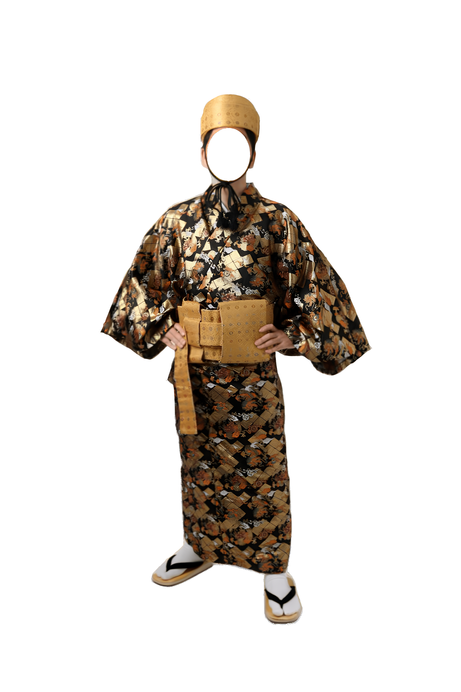
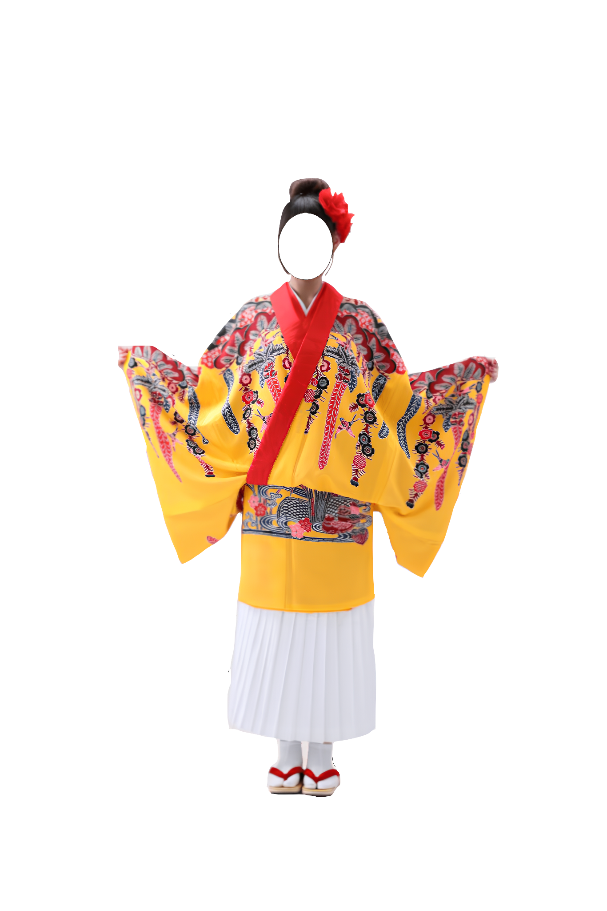

琉球衣装AR体験
Ryukyu Costume AR Experience
琉球王国時代の衣装をARで体験できるアプリである。 カメラに顔を映すと、男性・女性の琉球衣装を着た姿を楽しめる。 衣装の生地や時代背景の解説も確認できる。
※ カメラへのアクセス許可が必要である。
※ スマートフォンの縦向きでの利用を推奨する。
Ryukyu Costume AR Experience
琉球王国時代の衣装をARで体験できるアプリである。 カメラに顔を映すと、男性・女性の琉球衣装を着た姿を楽しめる。 衣装の生地や時代背景の解説も確認できる。
※ カメラへのアクセス許可が必要である。
※ スマートフォンの縦向きでの利用を推奨する。

